Provisional shortlist: changes and artifact concerns
Automated research screening, not radiologist review. None of these labels confirms injury or normality. “Likely processing artifact” is a rule-based concern, not a verified explanation. Native-image visibility and other-sequence support have not been assessed for individual candidates.
161 uncertain · 25 likely processing artifact · 24 possible change
This page contains 65 review examples: up to two largest components per label per animal. All 210 candidates remain in the screening table. Size controls display selection, not injury severity.
All screening labels and evidence · Shortlist CSV · Exact rules and limitations · Study status · Full scan review
Show All screening labels possible change likely processing artifact uncertain
BCF100-C001 — uncertain
Not enough support under these rules: alignment perturbation stability, global registration check. This does not exclude real abnormality.
Split: train · slices 3–9 · 1377 processing voxels (not lesion volume)
Within two pixels of mask/coverage edge: 44% · retained above score 0.6: 90% · small-shift check: not passed
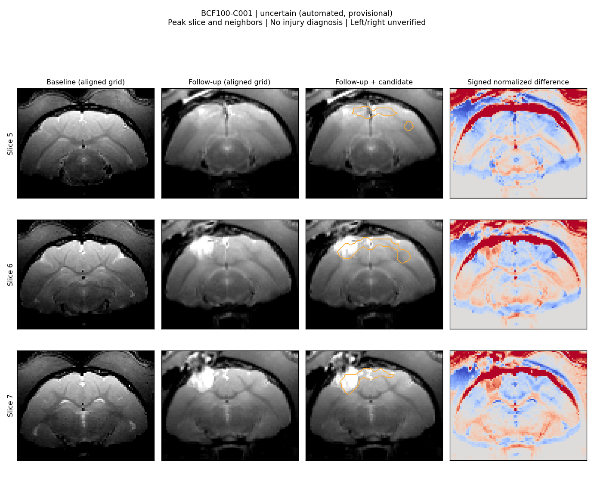
Native-scan sheet at first candidate slice · All slices and other pages
BCF100-C002 — uncertain
Not enough support under these rules: interior support, alignment perturbation stability, global registration check. This does not exclude real abnormality.
Split: train · slices 12–18 · 816 processing voxels (not lesion volume)
Within two pixels of mask/coverage edge: 51% · retained above score 0.6: 91% · small-shift check: not passed
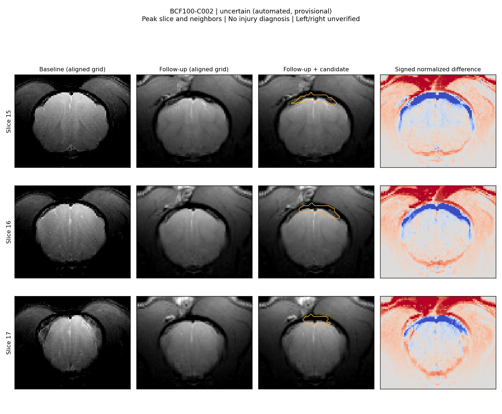
Native-scan sheet at first candidate slice · All slices and other pages
BCF100-C003 — likely processing artifact
Boundary-dominated with contrast or coverage sensitivity to small shifts; heuristic flag, not a confirmed cause.
Split: train · slices 12–12 · 3 processing voxels (not lesion volume)
Within two pixels of mask/coverage edge: 100% · retained above score 0.6: 0% · small-shift check: not passed
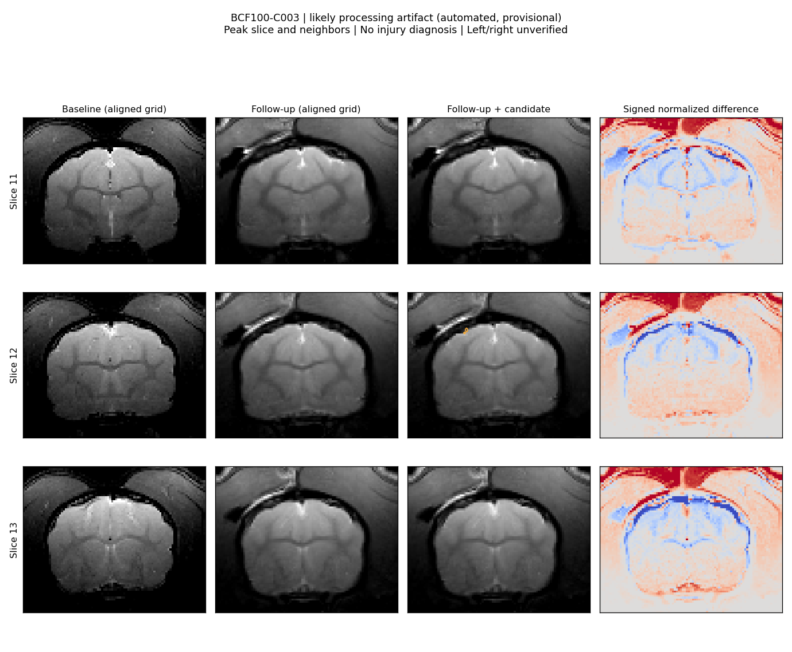
Native-scan sheet at first candidate slice · All slices and other pages
BCF101-C002 — uncertain
Not enough support under these rules: interior support, alignment perturbation stability. This does not exclude real abnormality.
Split: test · slices 11–18 · 1397 processing voxels (not lesion volume)
Within two pixels of mask/coverage edge: 53% · retained above score 0.6: 92% · small-shift check: not passed
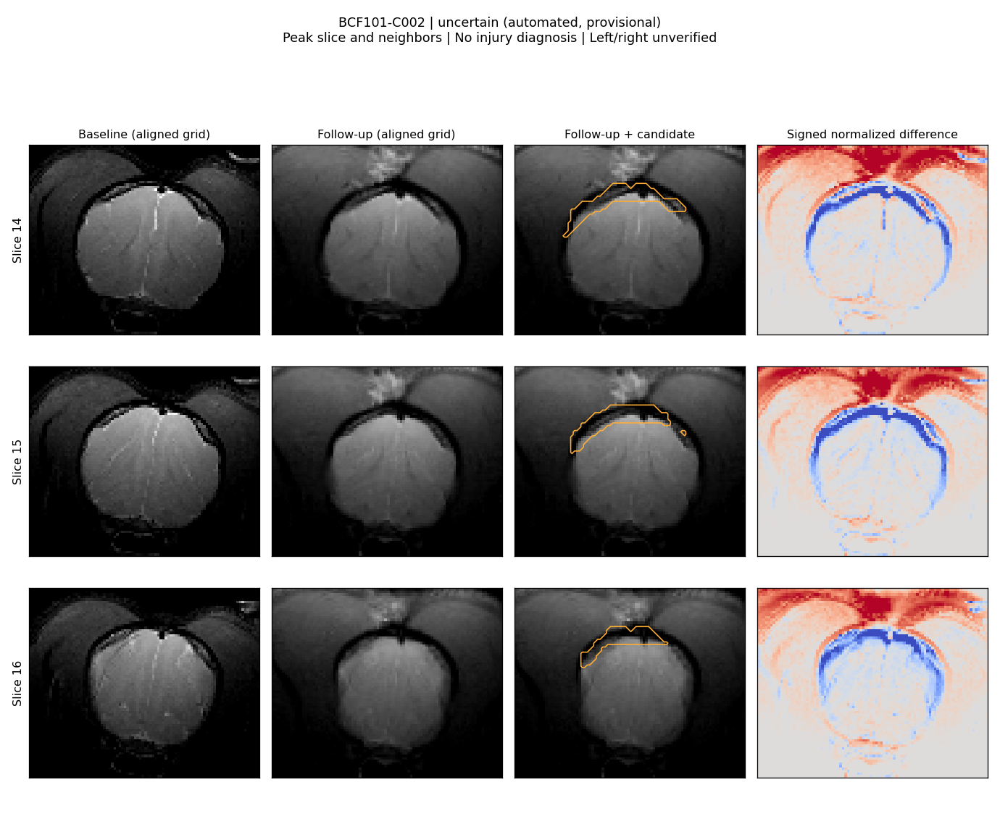
Native-scan sheet at first candidate slice · All slices and other pages
BCF101-C003 — likely processing artifact
Boundary-dominated with contrast or coverage sensitivity to small shifts; heuristic flag, not a confirmed cause.
Split: test · slices 10–10 · 3 processing voxels (not lesion volume)
Within two pixels of mask/coverage edge: 100% · retained above score 0.6: 0% · small-shift check: not passed
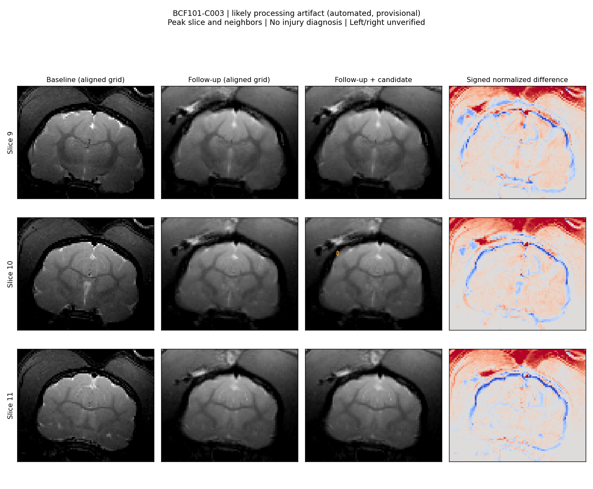
Native-scan sheet at first candidate slice · All slices and other pages
BCF101-C004 — possible change
Passed all engineering shortlist rules; biological origin and native-image visibility remain unverified.
Split: test · slices 3–9 · 1202 processing voxels (not lesion volume)
Within two pixels of mask/coverage edge: 21% · retained above score 0.6: 93% · small-shift check: passed
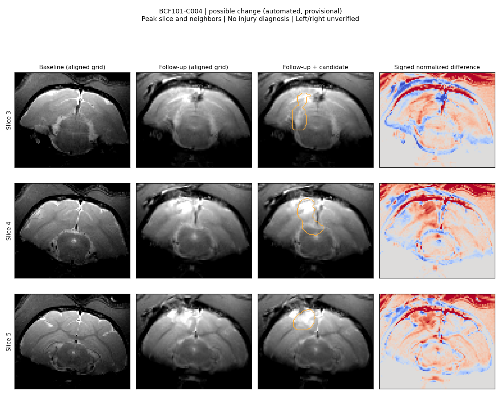
Native-scan sheet at first candidate slice · All slices and other pages
BCF101-C005 — uncertain
Not enough support under these rules: measurable normalized contrast, alignment perturbation stability. This does not exclude real abnormality.
Split: test · slices 1–2 · 175 processing voxels (not lesion volume)
Within two pixels of mask/coverage edge: 43% · retained above score 0.6: 80% · small-shift check: not passed
Native-scan sheet at first candidate slice · All slices and other pages
BCF101-C009 — likely processing artifact
Boundary-dominated with contrast or coverage sensitivity to small shifts; heuristic flag, not a confirmed cause.
Split: test · slices 1–1 · 29 processing voxels (not lesion volume)
Within two pixels of mask/coverage edge: 86% · retained above score 0.6: 86% · small-shift check: not passed
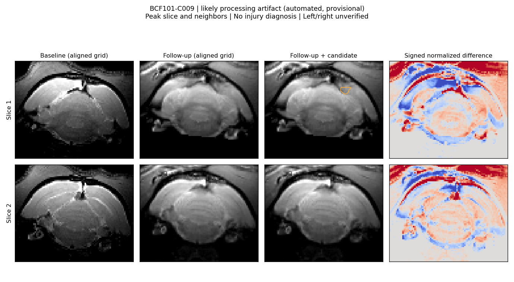
Native-scan sheet at first candidate slice · All slices and other pages
BCF102-C001 — uncertain
Not enough support under these rules: global registration check. This does not exclude real abnormality.
Split: train · slices 2–6 · 1157 processing voxels (not lesion volume)
Within two pixels of mask/coverage edge: 36% · retained above score 0.6: 89% · small-shift check: passed
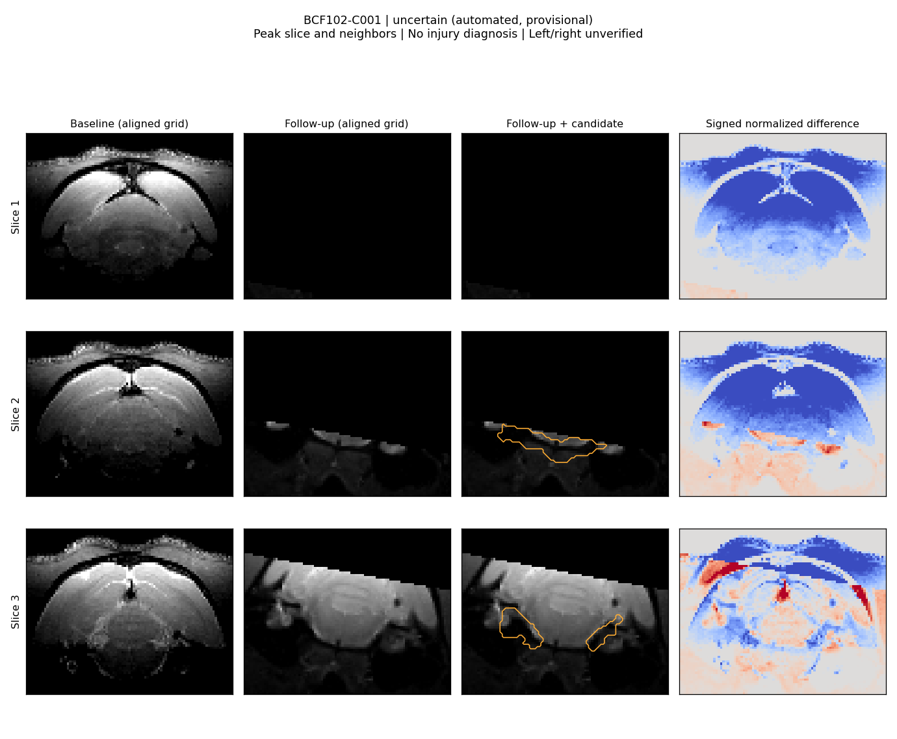
Native-scan sheet at first candidate slice · All slices and other pages
BCF102-C006 — uncertain
Not enough support under these rules: interior support, alignment perturbation stability, global registration check. This does not exclude real abnormality.
Split: train · slices 4–13 · 695 processing voxels (not lesion volume)
Within two pixels of mask/coverage edge: 55% · retained above score 0.6: 86% · small-shift check: not passed
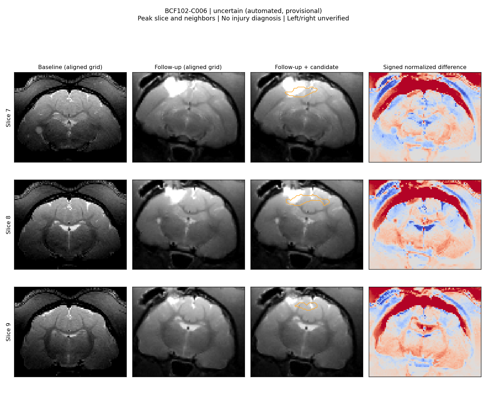
Native-scan sheet at first candidate slice · All slices and other pages
BCF103-C003 — likely processing artifact
Boundary-dominated with contrast or coverage sensitivity to small shifts; heuristic flag, not a confirmed cause.
Split: train · slices 3–3 · 18 processing voxels (not lesion volume)
Within two pixels of mask/coverage edge: 89% · retained above score 0.6: 72% · small-shift check: not passed
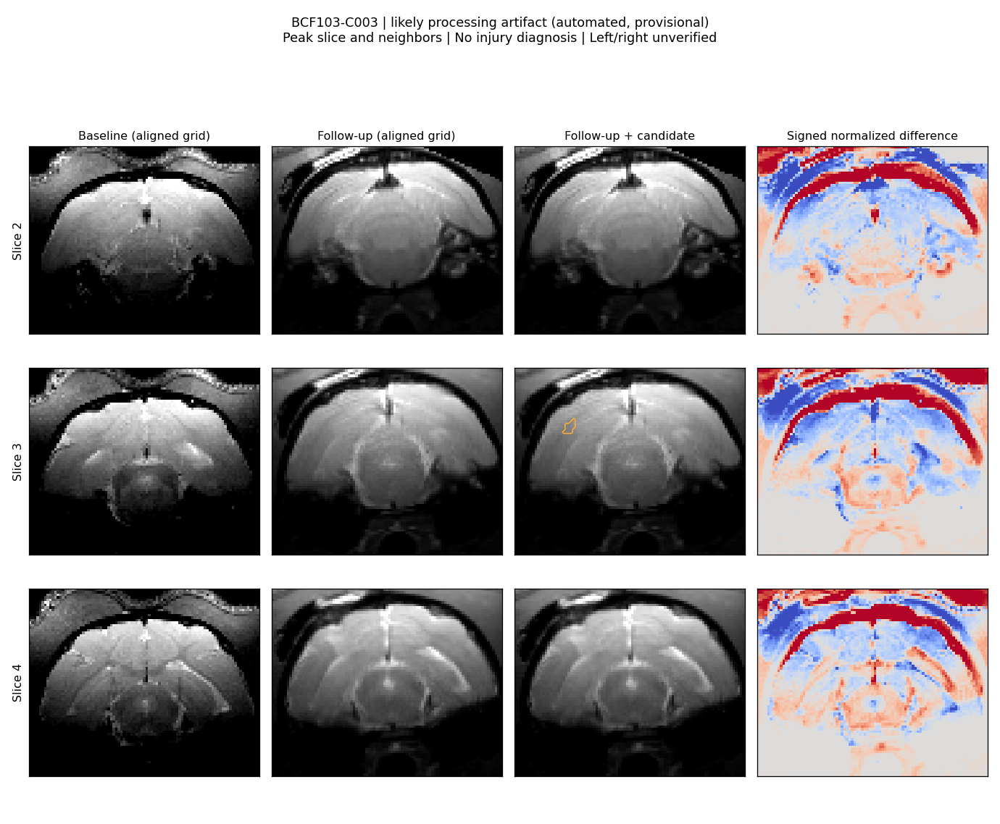
Native-scan sheet at first candidate slice · All slices and other pages
BCF103-C004 — possible change
Passed all engineering shortlist rules; biological origin and native-image visibility remain unverified.
Split: train · slices 5–8 · 415 processing voxels (not lesion volume)
Within two pixels of mask/coverage edge: 25% · retained above score 0.6: 93% · small-shift check: passed
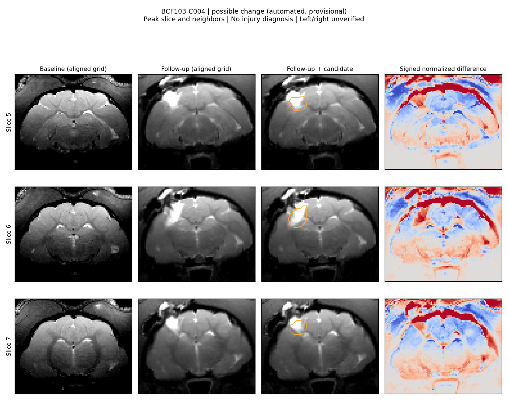
Native-scan sheet at first candidate slice · All slices and other pages
BCF103-C005 — uncertain
Not enough support under these rules: alignment perturbation stability. This does not exclude real abnormality.
Split: train · slices 12–18 · 967 processing voxels (not lesion volume)
Within two pixels of mask/coverage edge: 50% · retained above score 0.6: 91% · small-shift check: not passed
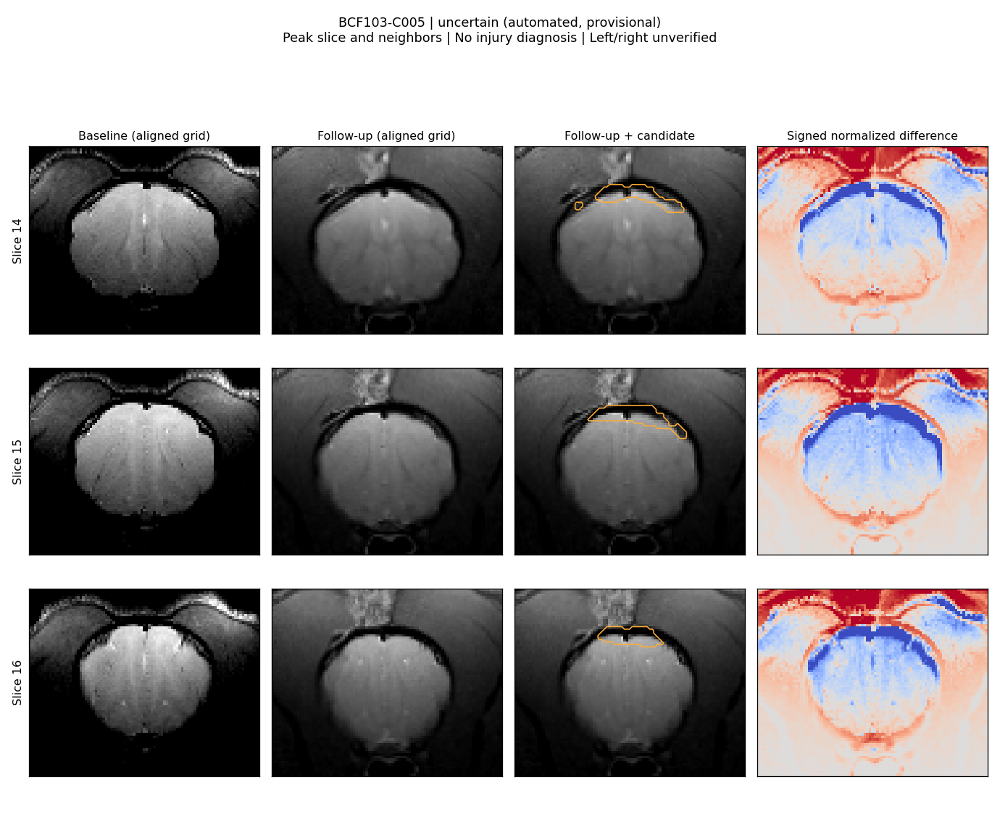
Native-scan sheet at first candidate slice · All slices and other pages
BCF103-C006 — uncertain
Not enough support under these rules: measurable normalized contrast, alignment perturbation stability. This does not exclude real abnormality.
Split: train · slices 2–10 · 1220 processing voxels (not lesion volume)
Within two pixels of mask/coverage edge: 14% · retained above score 0.6: 82% · small-shift check: not passed
Native-scan sheet at first candidate slice · All slices and other pages
BCF103-C013 — possible change
Passed all engineering shortlist rules; biological origin and native-image visibility remain unverified.
Split: train · slices 5–12 · 1064 processing voxels (not lesion volume)
Within two pixels of mask/coverage edge: 26% · retained above score 0.6: 90% · small-shift check: passed
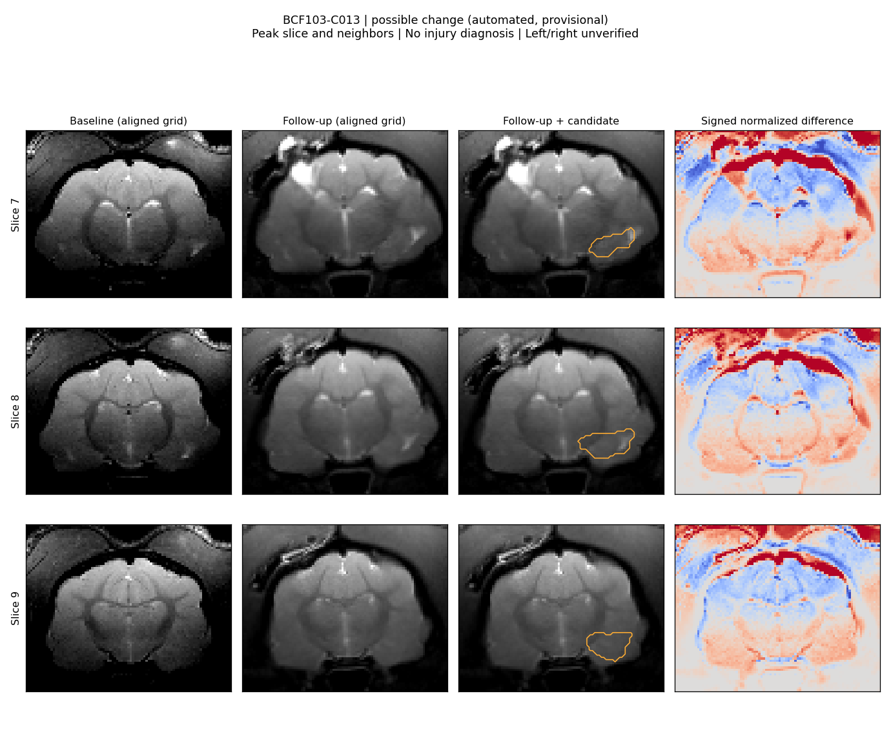
Native-scan sheet at first candidate slice · All slices and other pages
BCF88-C002 — uncertain
Not enough support under these rules: measurable normalized contrast, alignment perturbation stability. This does not exclude real abnormality.
Split: test · slices 2–5 · 557 processing voxels (not lesion volume)
Within two pixels of mask/coverage edge: 28% · retained above score 0.6: 94% · small-shift check: not passed
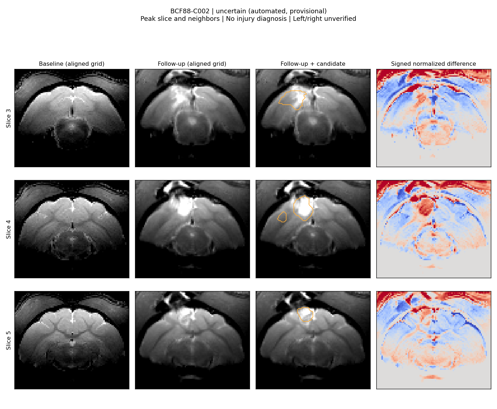
Native-scan sheet at first candidate slice · All slices and other pages
BCF88-C007 — likely processing artifact
Boundary-dominated with contrast or coverage sensitivity to small shifts; heuristic flag, not a confirmed cause.
Split: test · slices 12–14 · 16 processing voxels (not lesion volume)
Within two pixels of mask/coverage edge: 100% · retained above score 0.6: 19% · small-shift check: not passed
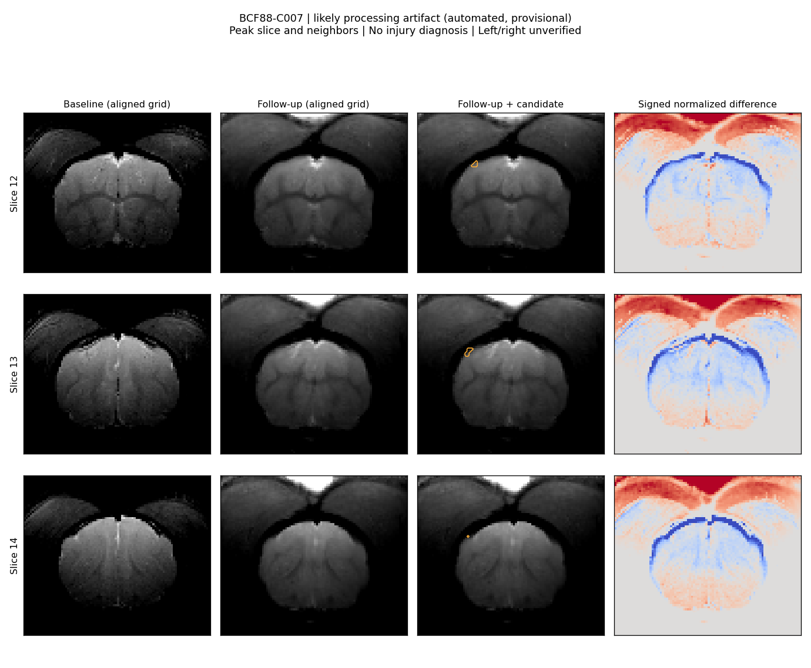
Native-scan sheet at first candidate slice · All slices and other pages
BCF88-C009 — uncertain
Not enough support under these rules: interior support, alignment perturbation stability. This does not exclude real abnormality.
Split: test · slices 14–18 · 518 processing voxels (not lesion volume)
Within two pixels of mask/coverage edge: 57% · retained above score 0.6: 91% · small-shift check: not passed
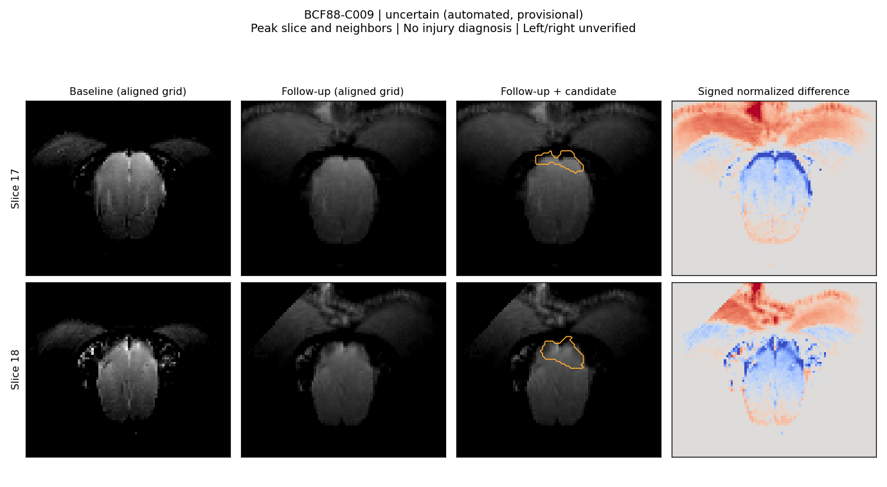
Native-scan sheet at first candidate slice · All slices and other pages
BCF88-C010 — likely processing artifact
Boundary-dominated with contrast or coverage sensitivity to small shifts; heuristic flag, not a confirmed cause.
Split: test · slices 11–12 · 9 processing voxels (not lesion volume)
Within two pixels of mask/coverage edge: 100% · retained above score 0.6: 44% · small-shift check: not passed
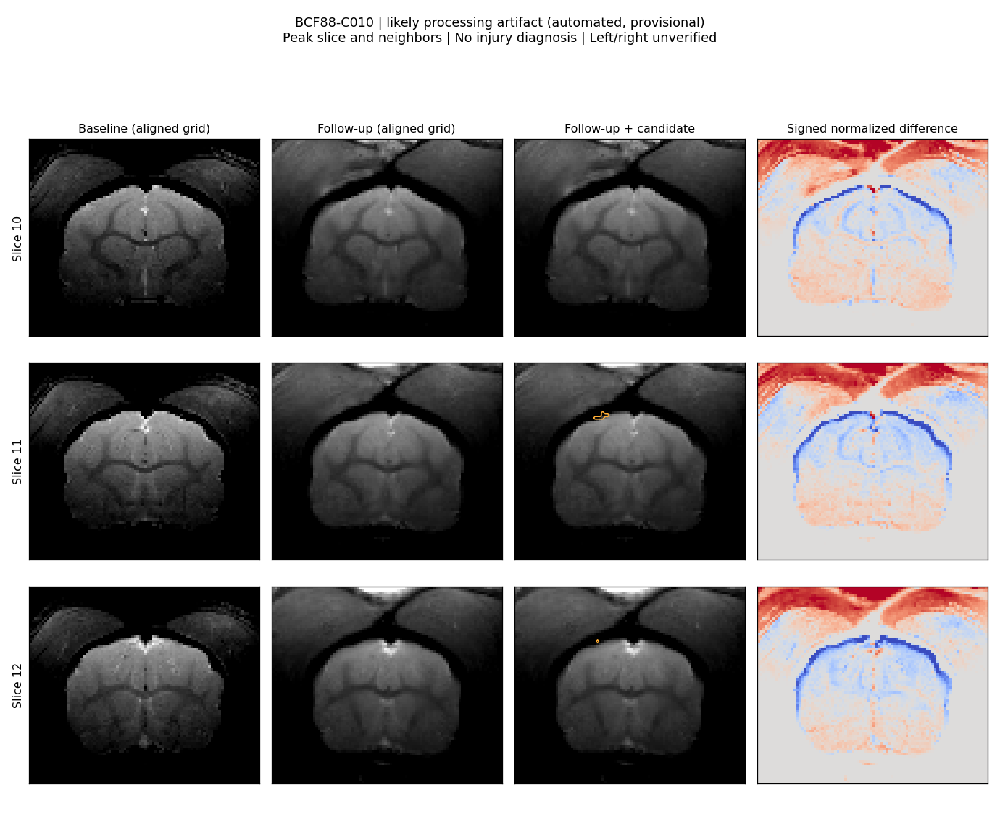
Native-scan sheet at first candidate slice · All slices and other pages
BCF88-C020 — possible change
Passed all engineering shortlist rules; biological origin and native-image visibility remain unverified.
Split: test · slices 1–5 · 297 processing voxels (not lesion volume)
Within two pixels of mask/coverage edge: 44% · retained above score 0.6: 80% · small-shift check: passed
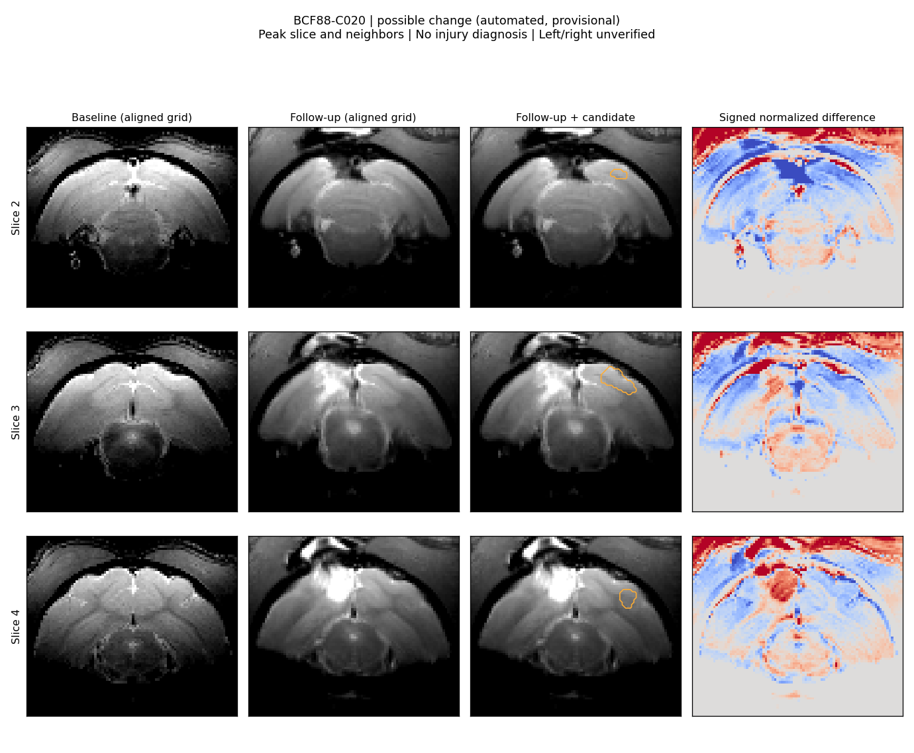
Native-scan sheet at first candidate slice · All slices and other pages
BCF89-C001 — uncertain
Not enough support under these rules: alignment perturbation stability. This does not exclude real abnormality.
Split: train · slices 2–9 · 1845 processing voxels (not lesion volume)
Within two pixels of mask/coverage edge: 42% · retained above score 0.6: 90% · small-shift check: not passed
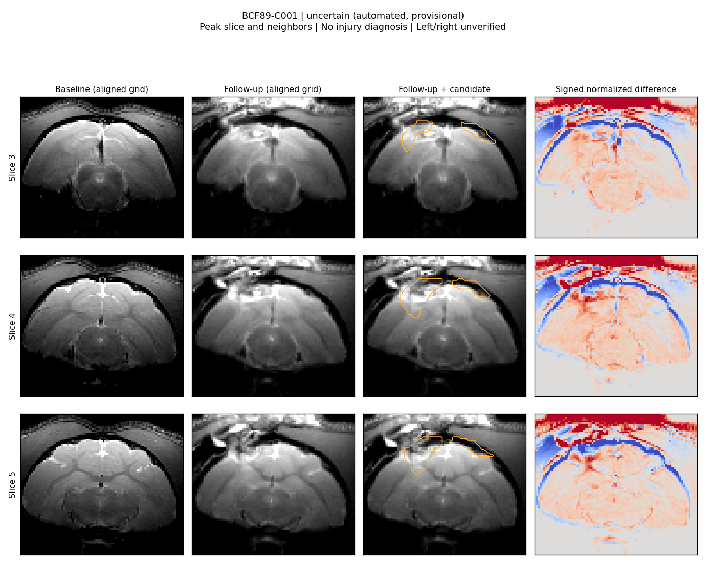
Native-scan sheet at first candidate slice · All slices and other pages
BCF89-C002 — possible change
Passed all engineering shortlist rules; biological origin and native-image visibility remain unverified.
Split: train · slices 1–2 · 207 processing voxels (not lesion volume)
Within two pixels of mask/coverage edge: 16% · retained above score 0.6: 86% · small-shift check: passed
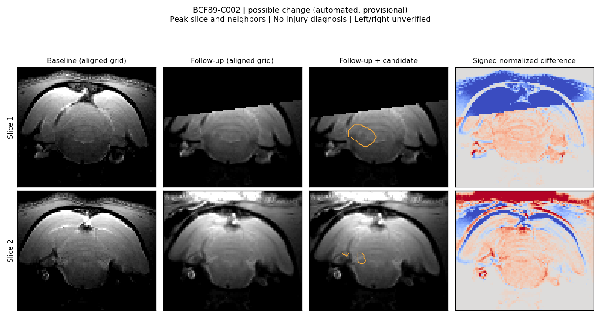
Native-scan sheet at first candidate slice · All slices and other pages
BCF89-C003 — likely processing artifact
Boundary-dominated with contrast or coverage sensitivity to small shifts; heuristic flag, not a confirmed cause.
Split: train · slices 16–16 · 4 processing voxels (not lesion volume)
Within two pixels of mask/coverage edge: 100% · retained above score 0.6: 0% · small-shift check: not passed
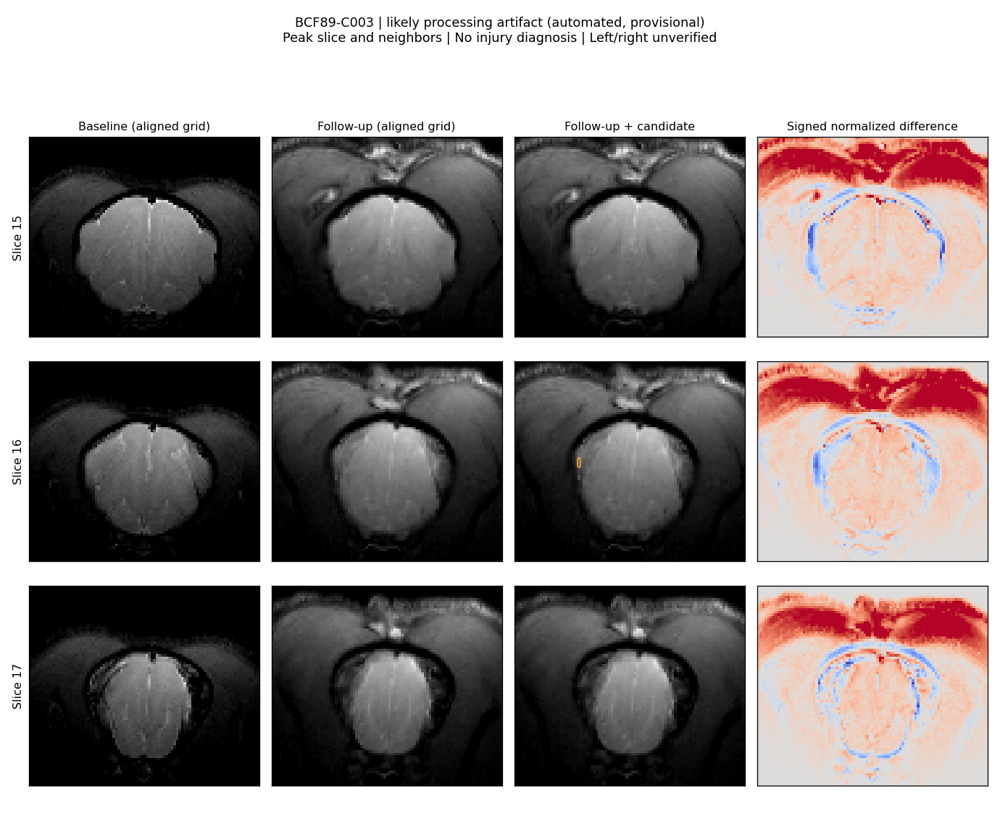
Native-scan sheet at first candidate slice · All slices and other pages
BCF89-C004 — uncertain
Not enough support under these rules: measurable normalized contrast, alignment perturbation stability. This does not exclude real abnormality.
Split: train · slices 2–3 · 179 processing voxels (not lesion volume)
Within two pixels of mask/coverage edge: 24% · retained above score 0.6: 80% · small-shift check: not passed
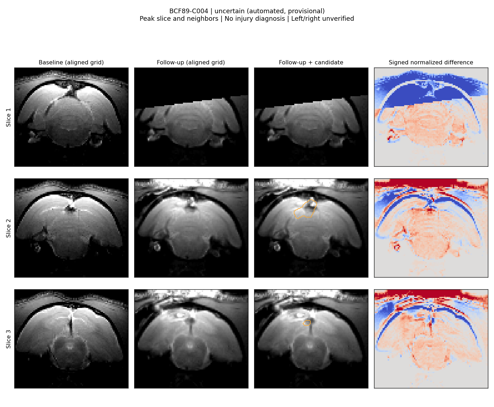
Native-scan sheet at first candidate slice · All slices and other pages
BCF89-C005 — possible change
Passed all engineering shortlist rules; biological origin and native-image visibility remain unverified.
Split: train · slices 10–13 · 281 processing voxels (not lesion volume)
Within two pixels of mask/coverage edge: 8% · retained above score 0.6: 73% · small-shift check: passed
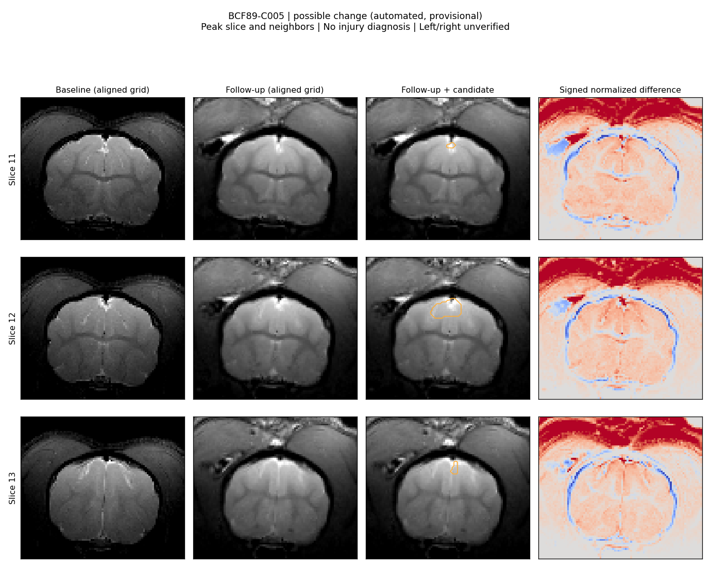
Native-scan sheet at first candidate slice · All slices and other pages
BCF90-C002 — likely processing artifact
Boundary-dominated with contrast or coverage sensitivity to small shifts; heuristic flag, not a confirmed cause.
Split: train · slices 15–15 · 9 processing voxels (not lesion volume)
Within two pixels of mask/coverage edge: 89% · retained above score 0.6: 67% · small-shift check: not passed
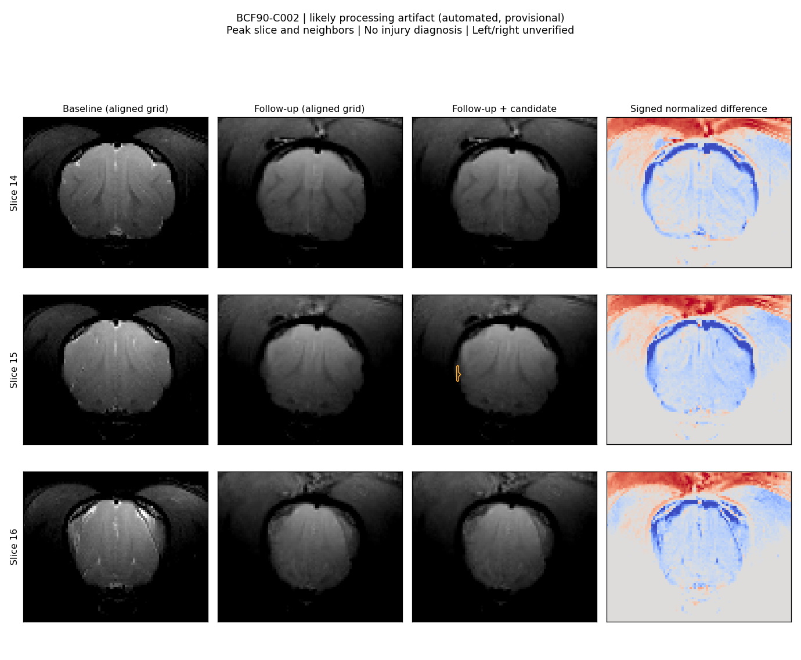
Native-scan sheet at first candidate slice · All slices and other pages
BCF90-C003 — possible change
Passed all engineering shortlist rules; biological origin and native-image visibility remain unverified.
Split: train · slices 2–3 · 186 processing voxels (not lesion volume)
Within two pixels of mask/coverage edge: 19% · retained above score 0.6: 91% · small-shift check: passed
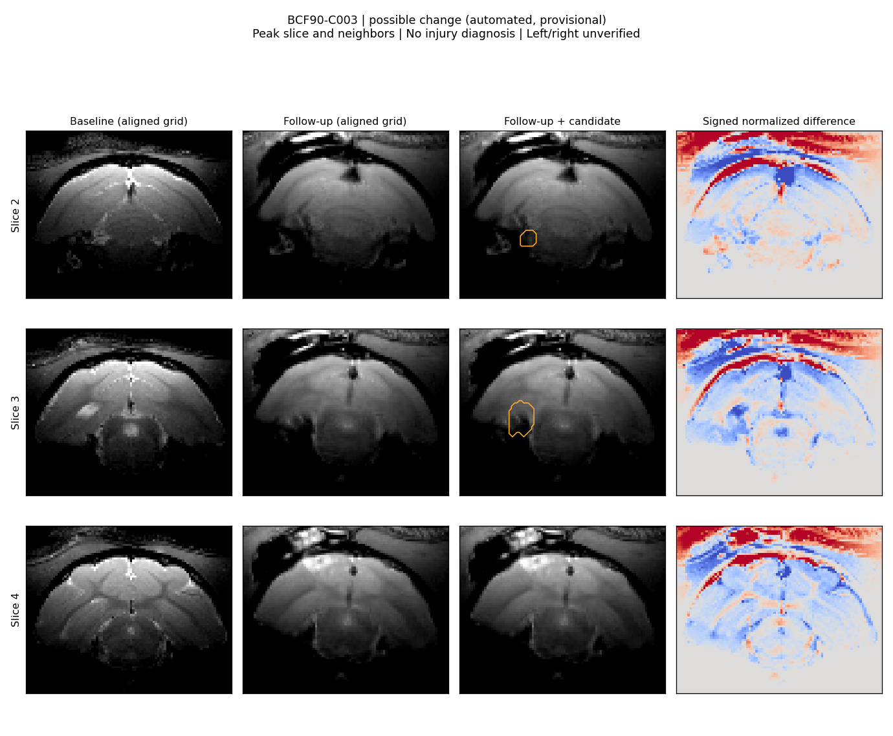
Native-scan sheet at first candidate slice · All slices and other pages
BCF90-C004 — uncertain
Not enough support under these rules: interior support, alignment perturbation stability. This does not exclude real abnormality.
Split: train · slices 11–18 · 759 processing voxels (not lesion volume)
Within two pixels of mask/coverage edge: 58% · retained above score 0.6: 91% · small-shift check: not passed
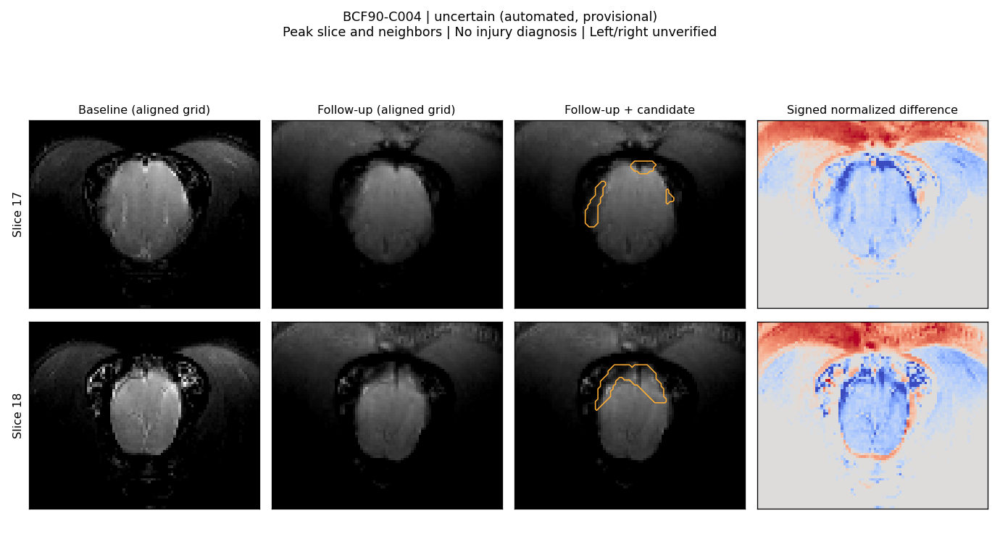
Native-scan sheet at first candidate slice · All slices and other pages
BCF90-C005 — possible change
Passed all engineering shortlist rules; biological origin and native-image visibility remain unverified.
Split: train · slices 3–10 · 863 processing voxels (not lesion volume)
Within two pixels of mask/coverage edge: 25% · retained above score 0.6: 90% · small-shift check: passed
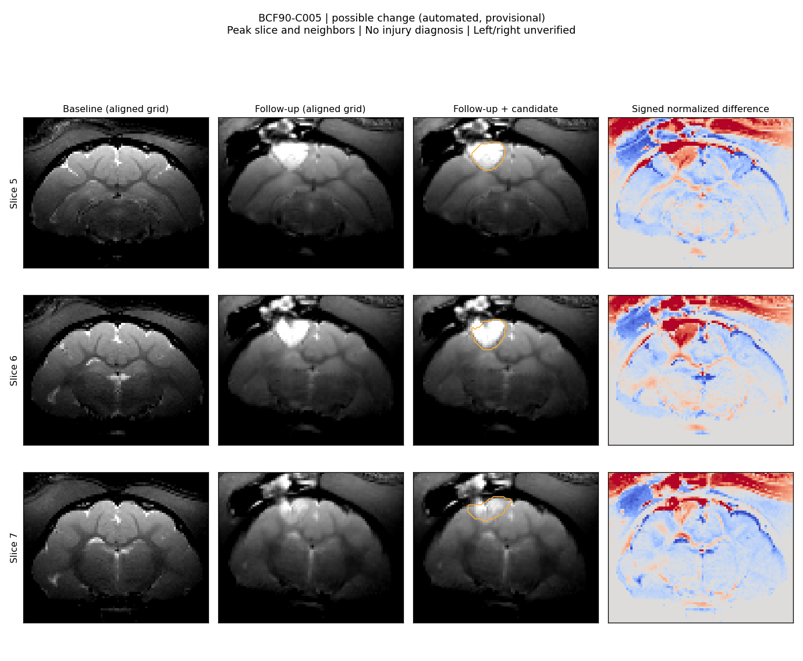
Native-scan sheet at first candidate slice · All slices and other pages
BCF90-C011 — uncertain
Not enough support under these rules: alignment perturbation stability. This does not exclude real abnormality.
Split: train · slices 4–11 · 403 processing voxels (not lesion volume)
Within two pixels of mask/coverage edge: 44% · retained above score 0.6: 86% · small-shift check: not passed
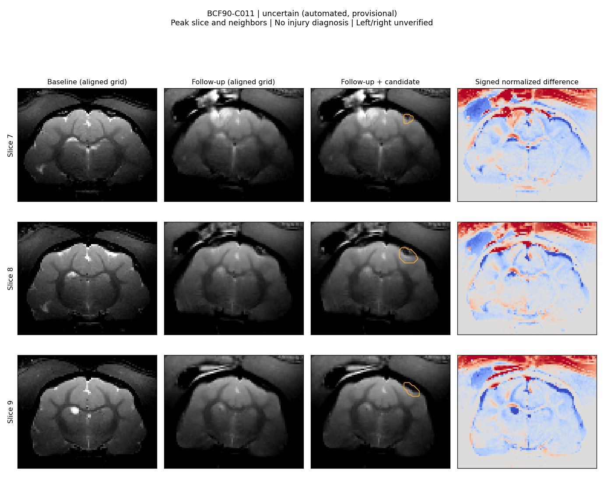
Native-scan sheet at first candidate slice · All slices and other pages
BCF90-C014 — likely processing artifact
Boundary-dominated with contrast or coverage sensitivity to small shifts; heuristic flag, not a confirmed cause.
Split: train · slices 11–11 · 2 processing voxels (not lesion volume)
Within two pixels of mask/coverage edge: 100% · retained above score 0.6: 50% · small-shift check: not passed
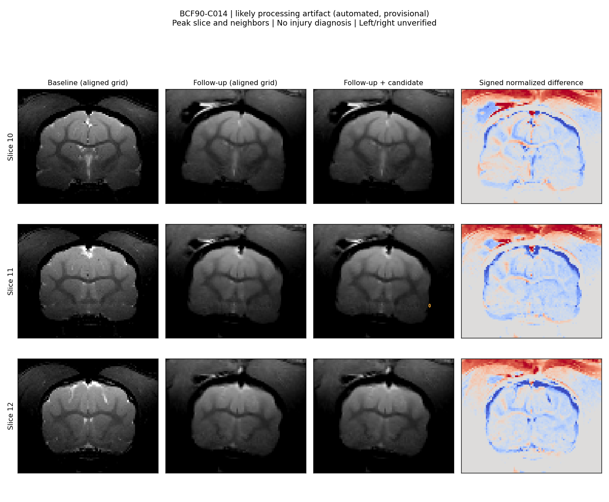
Native-scan sheet at first candidate slice · All slices and other pages
BCF91-C001 — uncertain
Not enough support under these rules: measurable normalized contrast, alignment perturbation stability. This does not exclude real abnormality.
Split: train · slices 3–11 · 1089 processing voxels (not lesion volume)
Within two pixels of mask/coverage edge: 24% · retained above score 0.6: 91% · small-shift check: not passed
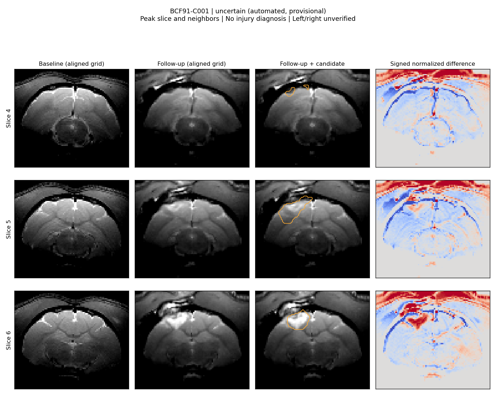
Native-scan sheet at first candidate slice · All slices and other pages
BCF91-C004 — uncertain
Not enough support under these rules: interior support, alignment perturbation stability. This does not exclude real abnormality.
Split: train · slices 1–3 · 205 processing voxels (not lesion volume)
Within two pixels of mask/coverage edge: 51% · retained above score 0.6: 93% · small-shift check: not passed
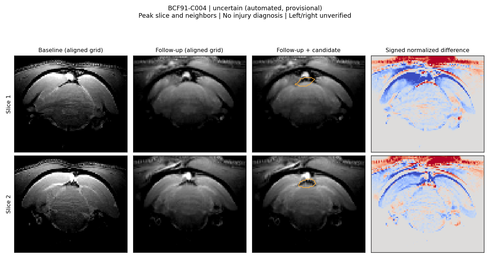
Native-scan sheet at first candidate slice · All slices and other pages
BCF91-C006 — likely processing artifact
Boundary-dominated with contrast or coverage sensitivity to small shifts; heuristic flag, not a confirmed cause.
Split: train · slices 2–2 · 1 processing voxels (not lesion volume)
Within two pixels of mask/coverage edge: 100% · retained above score 0.6: 0% · small-shift check: not passed
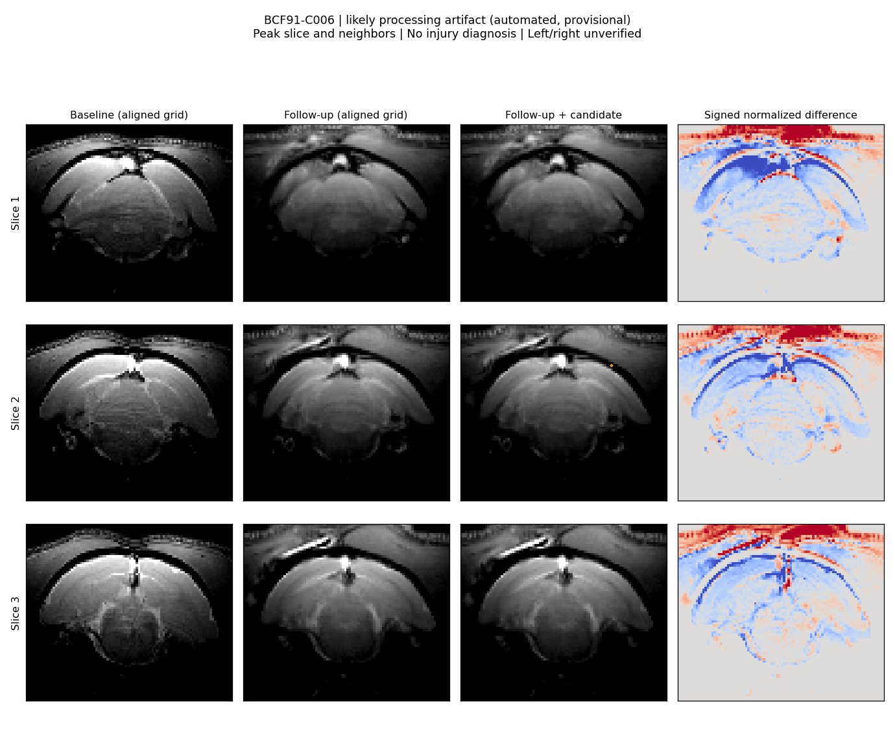
Native-scan sheet at first candidate slice · All slices and other pages
BCF92-C002 — uncertain
Not enough support under these rules: measurable normalized contrast, alignment perturbation stability. This does not exclude real abnormality.
Split: train · slices 14–16 · 209 processing voxels (not lesion volume)
Within two pixels of mask/coverage edge: 38% · retained above score 0.6: 82% · small-shift check: not passed
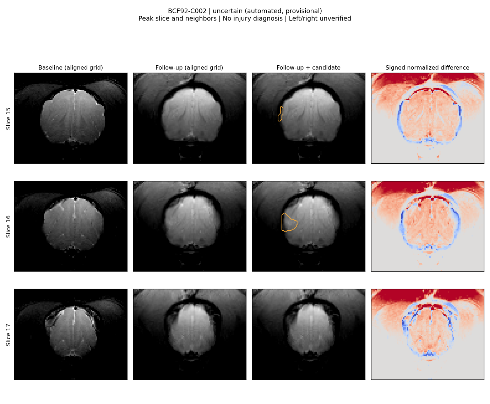
Native-scan sheet at first candidate slice · All slices and other pages
BCF92-C003 — uncertain
Not enough support under these rules: measurable normalized contrast, alignment perturbation stability. This does not exclude real abnormality.
Split: train · slices 2–13 · 2090 processing voxels (not lesion volume)
Within two pixels of mask/coverage edge: 32% · retained above score 0.6: 89% · small-shift check: not passed
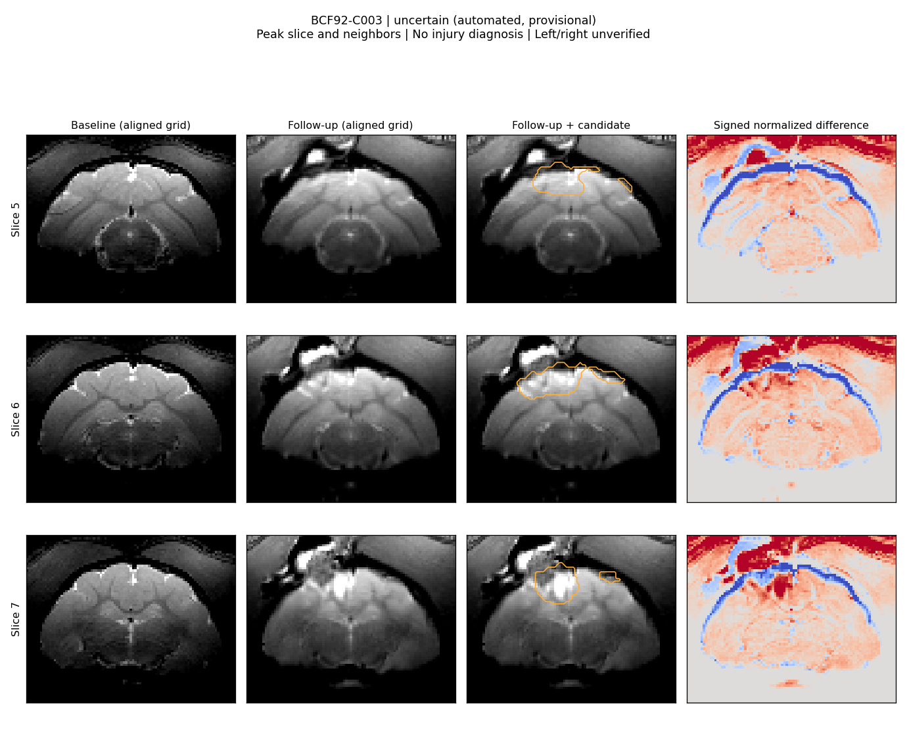
Native-scan sheet at first candidate slice · All slices and other pages
BCF92-C006 — possible change
Passed all engineering shortlist rules; biological origin and native-image visibility remain unverified.
Split: train · slices 15–16 · 119 processing voxels (not lesion volume)
Within two pixels of mask/coverage edge: 30% · retained above score 0.6: 61% · small-shift check: passed
Native-scan sheet at first candidate slice · All slices and other pages
BCF92-C010 — possible change
Passed all engineering shortlist rules; biological origin and native-image visibility remain unverified.
Split: train · slices 14–15 · 83 processing voxels (not lesion volume)
Within two pixels of mask/coverage edge: 12% · retained above score 0.6: 87% · small-shift check: passed
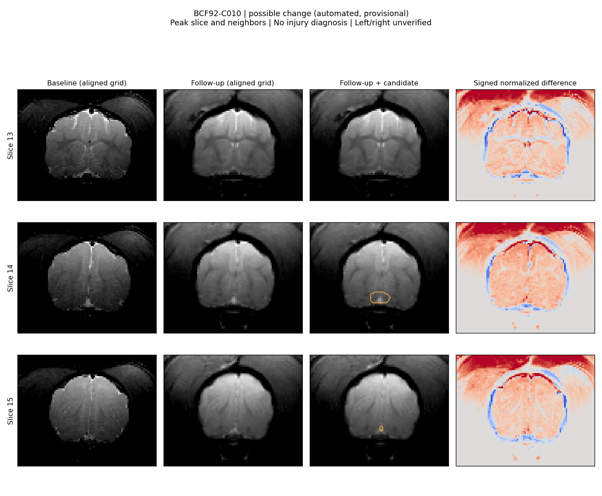
Native-scan sheet at first candidate slice · All slices and other pages
BCF93-C003 — possible change
Passed all engineering shortlist rules; biological origin and native-image visibility remain unverified.
Split: validation · slices 1–3 · 366 processing voxels (not lesion volume)
Within two pixels of mask/coverage edge: 15% · retained above score 0.6: 88% · small-shift check: passed
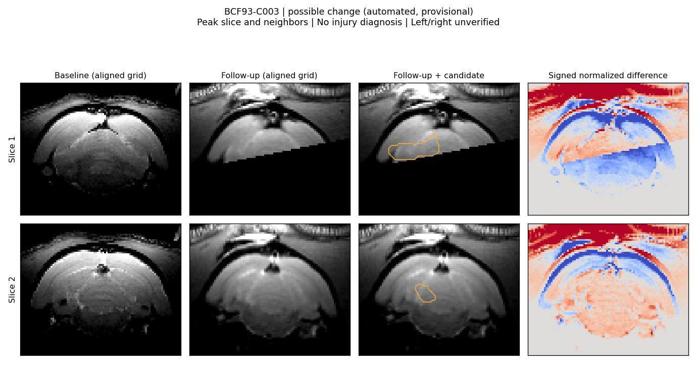
Native-scan sheet at first candidate slice · All slices and other pages
BCF93-C004 — likely processing artifact
Boundary-dominated with contrast or coverage sensitivity to small shifts; heuristic flag, not a confirmed cause.
Split: validation · slices 10–10 · 7 processing voxels (not lesion volume)
Within two pixels of mask/coverage edge: 100% · retained above score 0.6: 43% · small-shift check: not passed
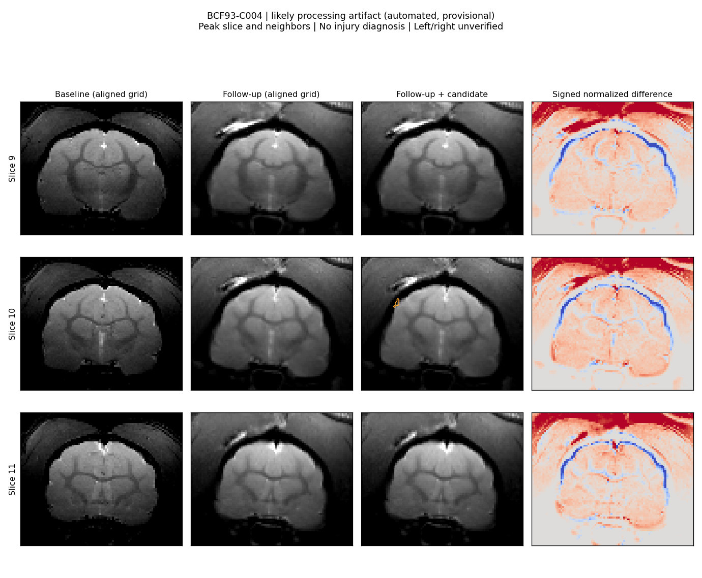
Native-scan sheet at first candidate slice · All slices and other pages
BCF93-C006 — uncertain
Not enough support under these rules: measurable normalized contrast, alignment perturbation stability. This does not exclude real abnormality.
Split: validation · slices 1–7 · 634 processing voxels (not lesion volume)
Within two pixels of mask/coverage edge: 27% · retained above score 0.6: 86% · small-shift check: not passed
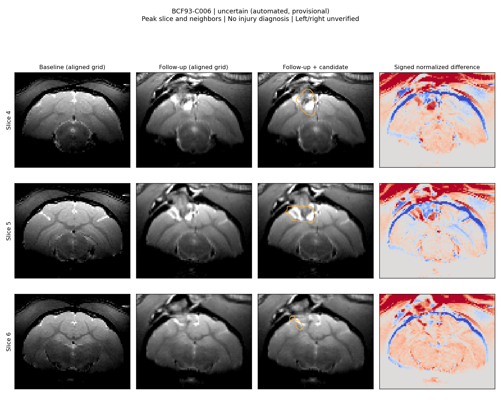
Native-scan sheet at first candidate slice · All slices and other pages
BCF93-C008 — possible change
Passed all engineering shortlist rules; biological origin and native-image visibility remain unverified.
Split: validation · slices 11–13 · 191 processing voxels (not lesion volume)
Within two pixels of mask/coverage edge: 14% · retained above score 0.6: 73% · small-shift check: passed
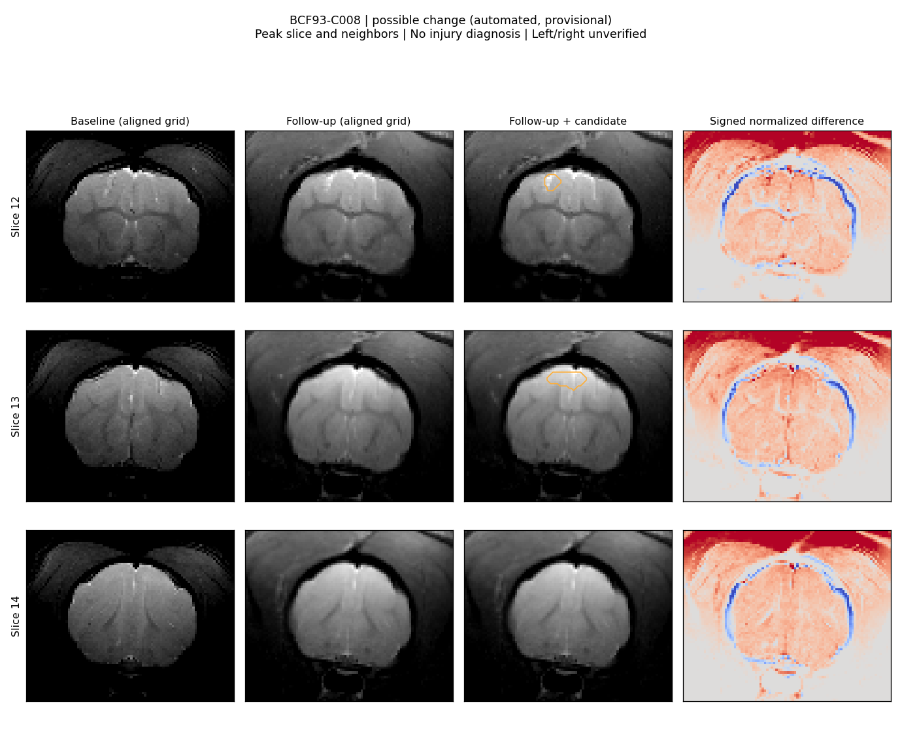
Native-scan sheet at first candidate slice · All slices and other pages
BCF93-C015 — uncertain
Not enough support under these rules: interior support, alignment perturbation stability. This does not exclude real abnormality.
Split: validation · slices 1–11 · 792 processing voxels (not lesion volume)
Within two pixels of mask/coverage edge: 61% · retained above score 0.6: 90% · small-shift check: not passed
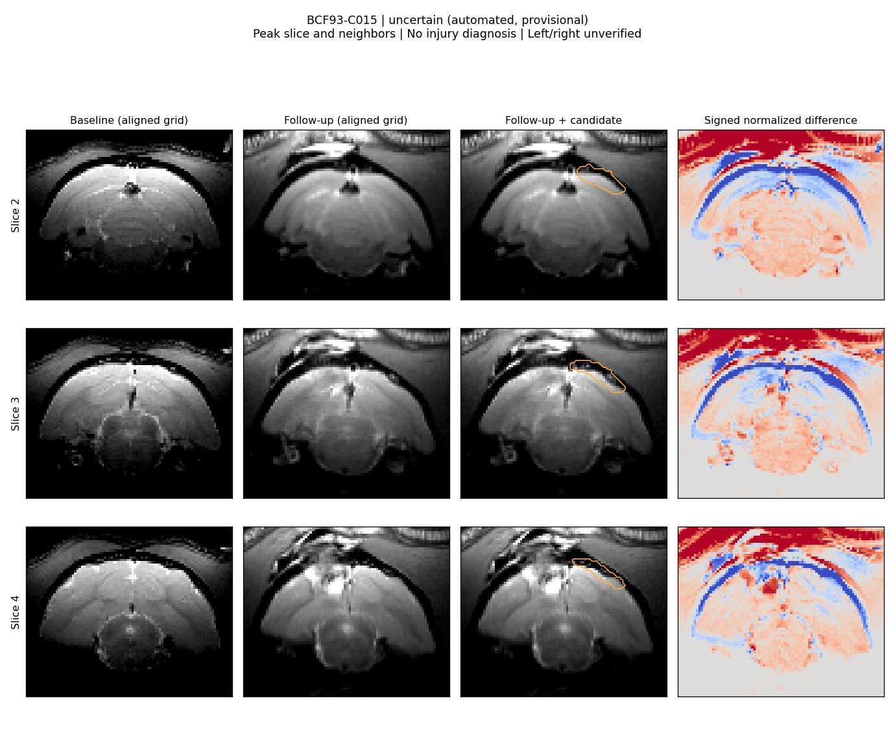
Native-scan sheet at first candidate slice · All slices and other pages
BCF95-C001 — uncertain
Not enough support under these rules: alignment perturbation stability. This does not exclude real abnormality.
Split: validation · slices 3–15 · 1444 processing voxels (not lesion volume)
Within two pixels of mask/coverage edge: 47% · retained above score 0.6: 89% · small-shift check: not passed
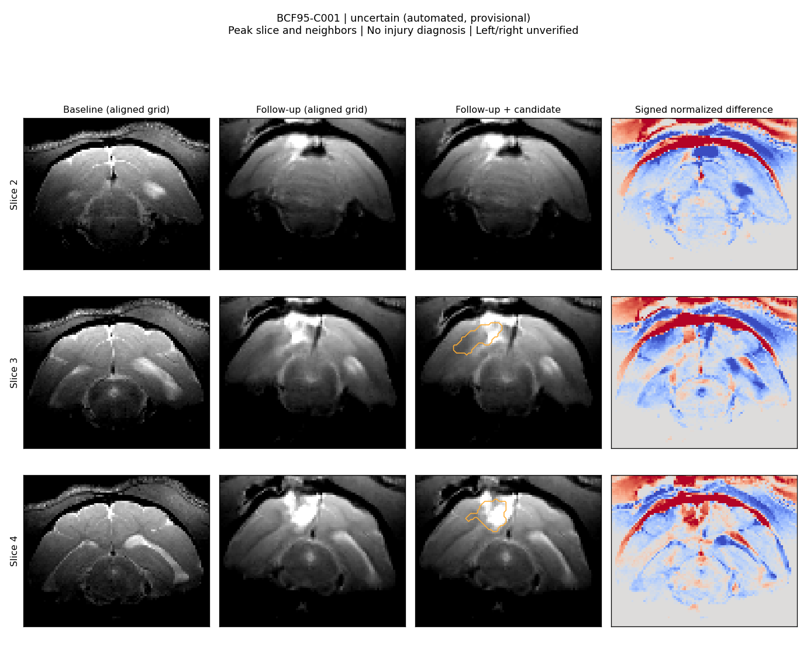
Native-scan sheet at first candidate slice · All slices and other pages
BCF95-C003 — possible change
Passed all engineering shortlist rules; biological origin and native-image visibility remain unverified.
Split: validation · slices 1–13 · 1852 processing voxels (not lesion volume)
Within two pixels of mask/coverage edge: 8% · retained above score 0.6: 89% · small-shift check: passed
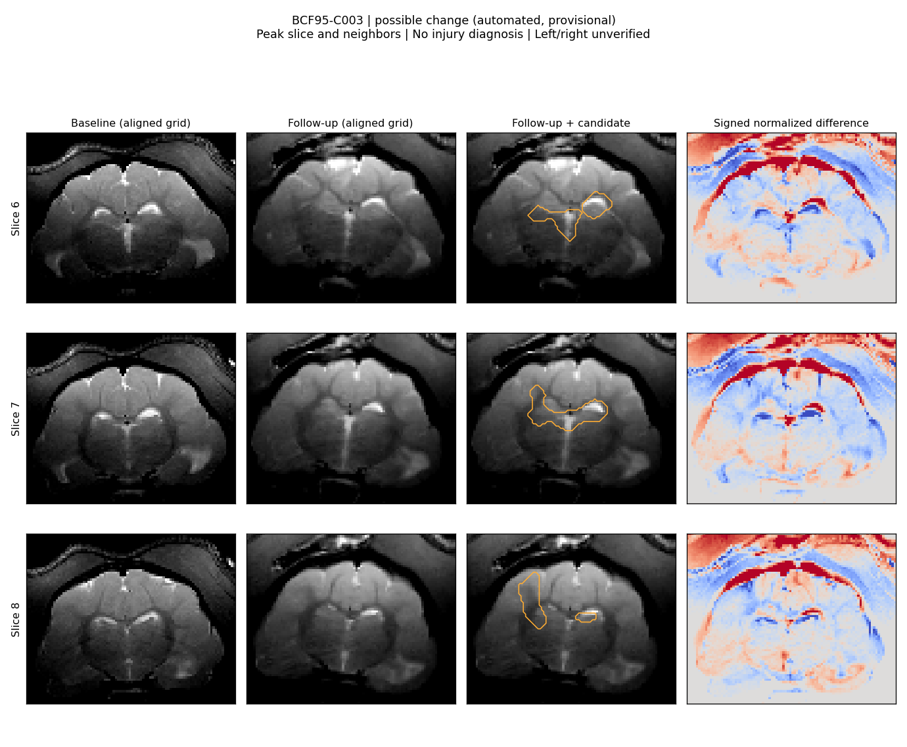
Native-scan sheet at first candidate slice · All slices and other pages
BCF95-C004 — possible change
Passed all engineering shortlist rules; biological origin and native-image visibility remain unverified.
Split: validation · slices 16–18 · 1025 processing voxels (not lesion volume)
Within two pixels of mask/coverage edge: 20% · retained above score 0.6: 90% · small-shift check: passed
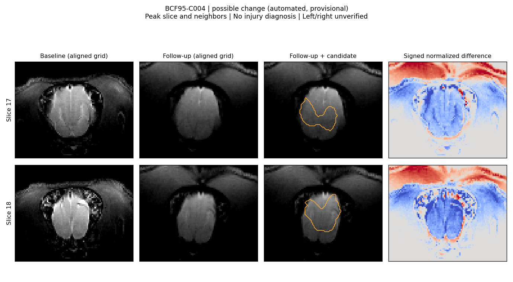
Native-scan sheet at first candidate slice · All slices and other pages
BCF95-C008 — uncertain
Not enough support under these rules: present on adjacent slices. This does not exclude real abnormality.
Split: validation · slices 13–13 · 157 processing voxels (not lesion volume)
Within two pixels of mask/coverage edge: 0% · retained above score 0.6: 90% · small-shift check: passed
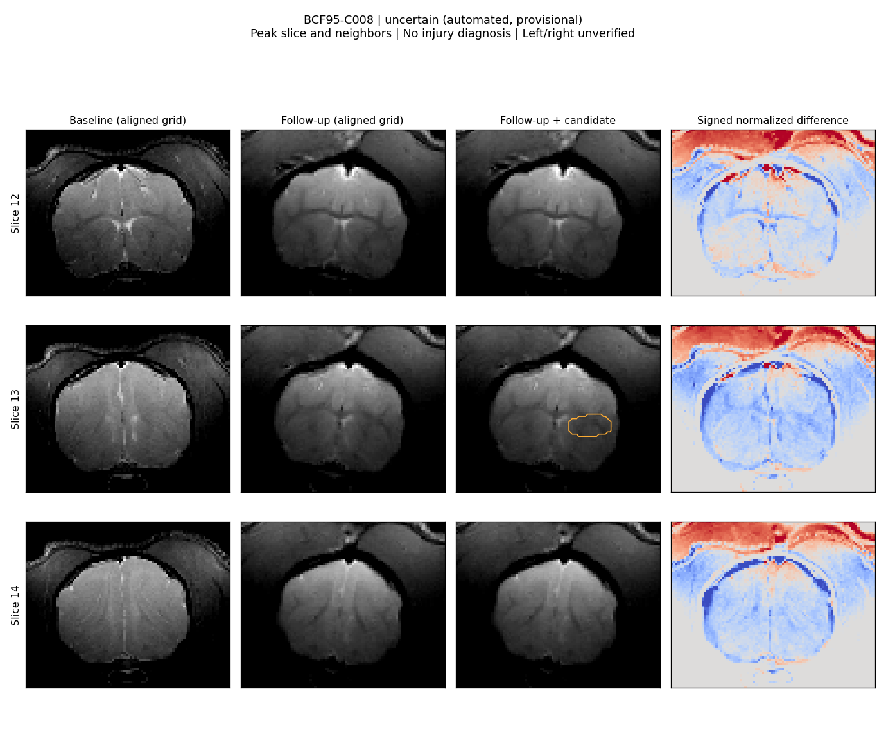
Native-scan sheet at first candidate slice · All slices and other pages
BCF95-C010 — likely processing artifact
Boundary-dominated with contrast or coverage sensitivity to small shifts; heuristic flag, not a confirmed cause.
Split: validation · slices 10–10 · 12 processing voxels (not lesion volume)
Within two pixels of mask/coverage edge: 100% · retained above score 0.6: 83% · small-shift check: not passed
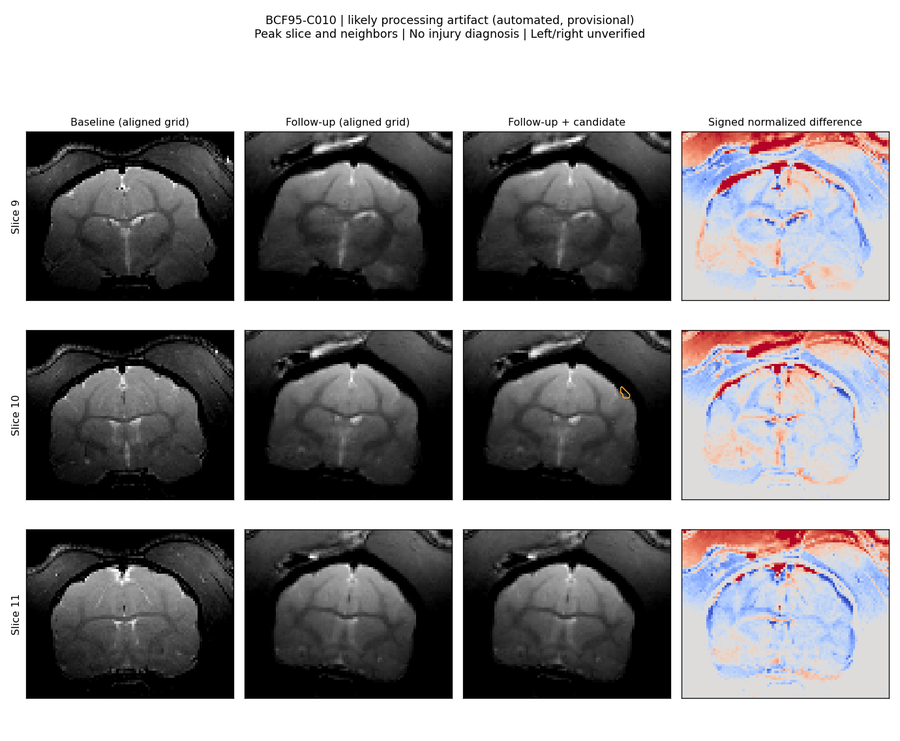
Native-scan sheet at first candidate slice · All slices and other pages
BCF96-C001 — possible change
Passed all engineering shortlist rules; biological origin and native-image visibility remain unverified.
Split: test · slices 1–12 · 2684 processing voxels (not lesion volume)
Within two pixels of mask/coverage edge: 11% · retained above score 0.6: 88% · small-shift check: passed
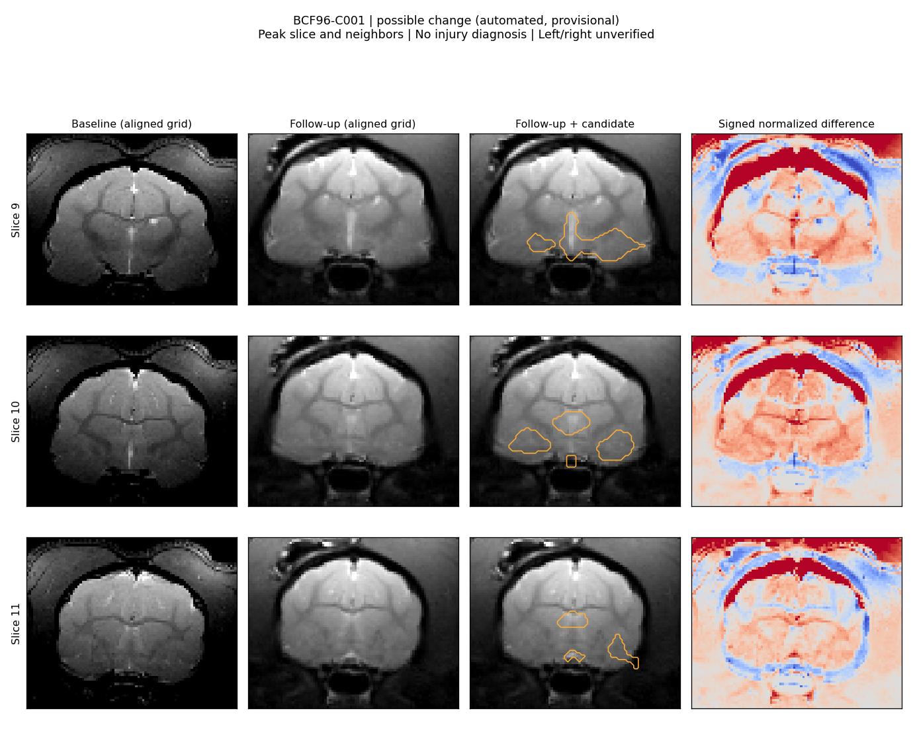
Native-scan sheet at first candidate slice · All slices and other pages
BCF96-C002 — uncertain
Not enough support under these rules: measurable normalized contrast, alignment perturbation stability. This does not exclude real abnormality.
Split: test · slices 1–5 · 1175 processing voxels (not lesion volume)
Within two pixels of mask/coverage edge: 16% · retained above score 0.6: 88% · small-shift check: not passed
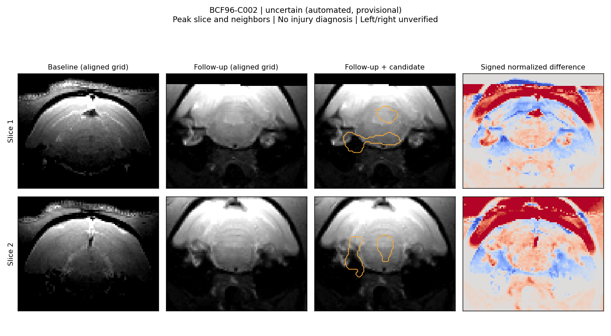
Native-scan sheet at first candidate slice · All slices and other pages
BCF96-C005 — uncertain
Not enough support under these rules: alignment perturbation stability. This does not exclude real abnormality.
Split: test · slices 3–18 · 1325 processing voxels (not lesion volume)
Within two pixels of mask/coverage edge: 47% · retained above score 0.6: 84% · small-shift check: not passed
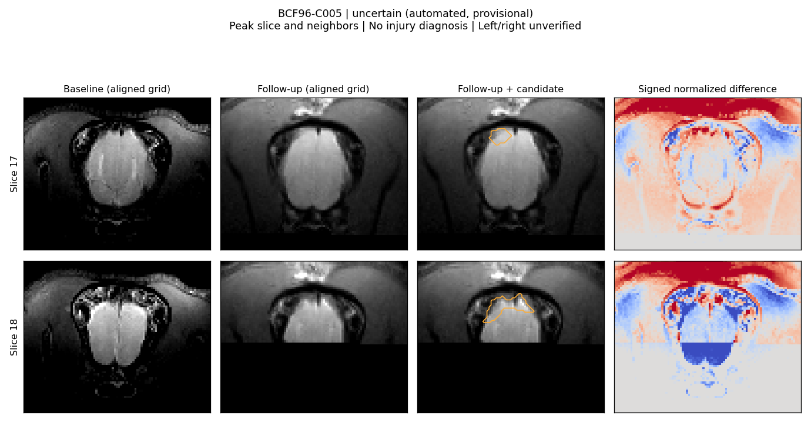
Native-scan sheet at first candidate slice · All slices and other pages
BCF96-C008 — possible change
Passed all engineering shortlist rules; biological origin and native-image visibility remain unverified.
Split: test · slices 5–7 · 175 processing voxels (not lesion volume)
Within two pixels of mask/coverage edge: 0% · retained above score 0.6: 71% · small-shift check: passed
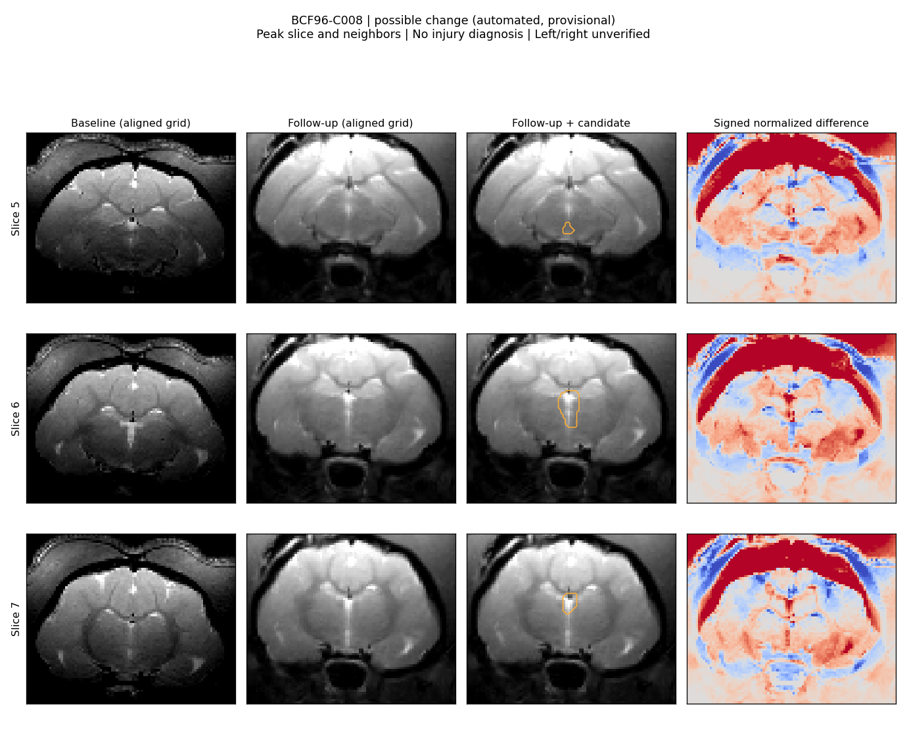
Native-scan sheet at first candidate slice · All slices and other pages
BCF96-C012 — likely processing artifact
Boundary-dominated with contrast or coverage sensitivity to small shifts; heuristic flag, not a confirmed cause.
Split: test · slices 15–15 · 18 processing voxels (not lesion volume)
Within two pixels of mask/coverage edge: 83% · retained above score 0.6: 61% · small-shift check: not passed
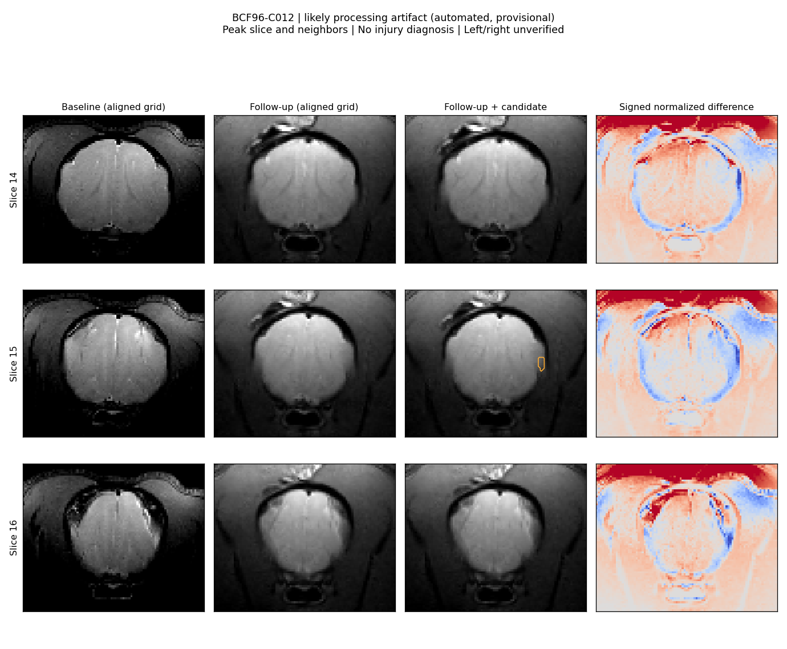
Native-scan sheet at first candidate slice · All slices and other pages
BCF97-C005 — uncertain
Not enough support under these rules: global registration check. This does not exclude real abnormality.
Split: test · slices 3–18 · 2148 processing voxels (not lesion volume)
Within two pixels of mask/coverage edge: 40% · retained above score 0.6: 92% · small-shift check: passed
Native-scan sheet at first candidate slice · All slices and other pages
BCF97-C007 — uncertain
Not enough support under these rules: global registration check. This does not exclude real abnormality.
Split: test · slices 5–8 · 589 processing voxels (not lesion volume)
Within two pixels of mask/coverage edge: 22% · retained above score 0.6: 85% · small-shift check: passed
Native-scan sheet at first candidate slice · All slices and other pages
BCF98-C001 — uncertain
Not enough support under these rules: measurable normalized contrast, alignment perturbation stability. This does not exclude real abnormality.
Split: train · slices 2–13 · 1623 processing voxels (not lesion volume)
Within two pixels of mask/coverage edge: 17% · retained above score 0.6: 85% · small-shift check: not passed
Native-scan sheet at first candidate slice · All slices and other pages
BCF98-C003 — uncertain
Not enough support under these rules: alignment perturbation stability. This does not exclude real abnormality.
Split: train · slices 5–12 · 784 processing voxels (not lesion volume)
Within two pixels of mask/coverage edge: 41% · retained above score 0.6: 90% · small-shift check: not passed
Native-scan sheet at first candidate slice · All slices and other pages
BCF98-C012 — possible change
Passed all engineering shortlist rules; biological origin and native-image visibility remain unverified.
Split: train · slices 3–6 · 158 processing voxels (not lesion volume)
Within two pixels of mask/coverage edge: 18% · retained above score 0.6: 67% · small-shift check: passed
Native-scan sheet at first candidate slice · All slices and other pages
BCF98-C015 — possible change
Passed all engineering shortlist rules; biological origin and native-image visibility remain unverified.
Split: train · slices 6–8 · 130 processing voxels (not lesion volume)
Within two pixels of mask/coverage edge: 22% · retained above score 0.6: 73% · small-shift check: passed
Native-scan sheet at first candidate slice · All slices and other pages
BCF98-C016 — likely processing artifact
Boundary-dominated with contrast or coverage sensitivity to small shifts; heuristic flag, not a confirmed cause.
Split: train · slices 3–4 · 26 processing voxels (not lesion volume)
Within two pixels of mask/coverage edge: 92% · retained above score 0.6: 77% · small-shift check: not passed
Native-scan sheet at first candidate slice · All slices and other pages
BCF98-C020 — likely processing artifact
Boundary-dominated with contrast or coverage sensitivity to small shifts; heuristic flag, not a confirmed cause.
Split: train · slices 9–9 · 10 processing voxels (not lesion volume)
Within two pixels of mask/coverage edge: 80% · retained above score 0.6: 40% · small-shift check: not passed
Native-scan sheet at first candidate slice · All slices and other pages
BCF99-C004 — uncertain
Not enough support under these rules: alignment perturbation stability, global registration check. This does not exclude real abnormality.
Split: train · slices 1–12 · 1467 processing voxels (not lesion volume)
Within two pixels of mask/coverage edge: 40% · retained above score 0.6: 90% · small-shift check: not passed
Native-scan sheet at first candidate slice · All slices and other pages
BCF99-C007 — uncertain
Not enough support under these rules: interior support, alignment perturbation stability, global registration check. This does not exclude real abnormality.
Split: train · slices 13–18 · 771 processing voxels (not lesion volume)
Within two pixels of mask/coverage edge: 51% · retained above score 0.6: 89% · small-shift check: not passed
Native-scan sheet at first candidate slice · All slices and other pages
BCF99-C011 — likely processing artifact
Boundary-dominated with contrast or coverage sensitivity to small shifts; heuristic flag, not a confirmed cause.
Split: train · slices 1–1 · 18 processing voxels (not lesion volume)
Within two pixels of mask/coverage edge: 89% · retained above score 0.6: 61% · small-shift check: not passed
Native-scan sheet at first candidate slice · All slices and other pages
BCF99-C012 — likely processing artifact
Boundary-dominated with contrast or coverage sensitivity to small shifts; heuristic flag, not a confirmed cause.
Split: train · slices 2–3 · 22 processing voxels (not lesion volume)
Within two pixels of mask/coverage edge: 91% · retained above score 0.6: 64% · small-shift check: not passed
Native-scan sheet at first candidate slice · All slices and other pages